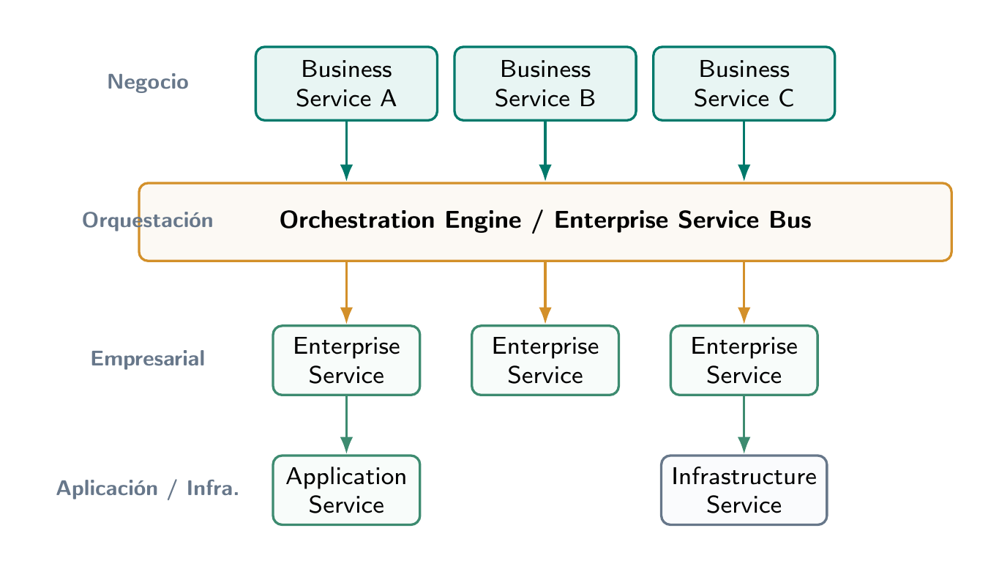
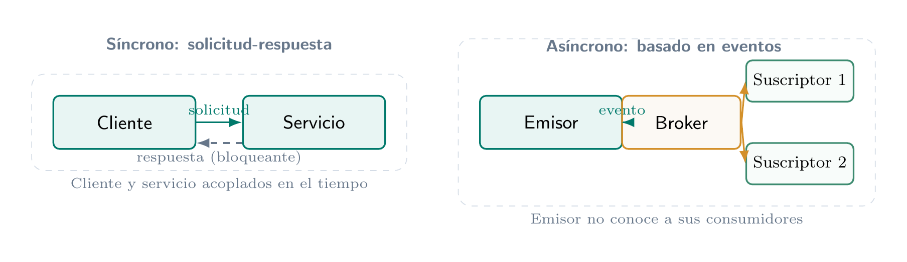
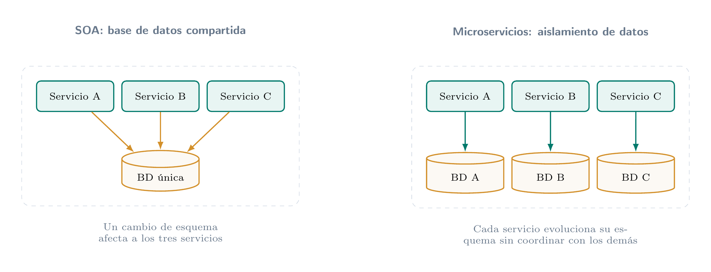

PP_08_IPTI · Semana 2
Contratos de API: cómo se comunican los servicios
De la SOA a los microservicios, y cómo cambiar un contrato sin romper a nadie
Un servicio de comprobantes y dos clientes muy distintos
La aplicación web pide un comprobante y espera la respuesta
El sistema contable los sincroniza de noche, sin apuro
Seis meses después, un campo cambia de nombre
Los dos clientes siguen funcionando, ¿cómo?
¿Un solo contrato sirve para los dos?
SOA: servicios que toda la empresa reutiliza
Las capas de servicios de la SOA

Reutilizar ahorra código, pero ata a todos
Un solo servicio Customer para todas las divisiones
Cambia su interfaz y todos los que lo usan se ven afectados
Ya no hay cambios pequeños: se despliega y prueba todo junto
Acoplamiento: lo que le pasa a uno le pasa a todos
Esperar la respuesta o dejar un mensaje

Cuatro palabras para describir cómo colaboran los servicios
Tres estilos de contrato
REST: la dirección es el recurso, el verbo es la acción
gRPC: el mismo contrato en un archivo .proto
El número de cada campo lo identifica, no su nombre
El cliente genera su código desde este archivo
Cómo comparar REST y gRPC en la práctica
Un contrato es una promesa, no una copia de la base de datos
El cliente lee solo lo que necesita
Tres números que avisan qué tan grande es el cambio
Cuando el cambio rompe: dos versiones al mismo tiempo
Coexistir endpoints, para que cada equipo migre a su ritmo
Se publica la versión nueva y se deja la anterior funcionando
Cada cliente migra cuando puede, sin apuro
Cuando nadie usa la anterior, se retira
Dos garantías para que nadie se rompa
El servidor se actualiza primero: acepta lo viejo y envía lo que lo viejo pueda leer
SOA con una base compartida contra microservicios con base propia

Dos clientes, dos contratos, un cambio sin sustos
Esta semana entregan tres actividades
PE-S2
Contrato REST y gRPC
Un recurso, dos contratos y una decisión
puntos
2,25
TA-S2
SOA, microservicios y serverless
Cuadro comparativo y análisis con cita APA
puntos
2,25
GA-S2
Master Class ASU
Reflexión sobre la clase de ASU
punto
1
Consigna, plantilla y rúbrica en Canvas.
= cambiar sin romper a nadie
Un contrato es una promesa: se diseña para poder cambiar
Próxima semana: continuamos con integración de plataformas